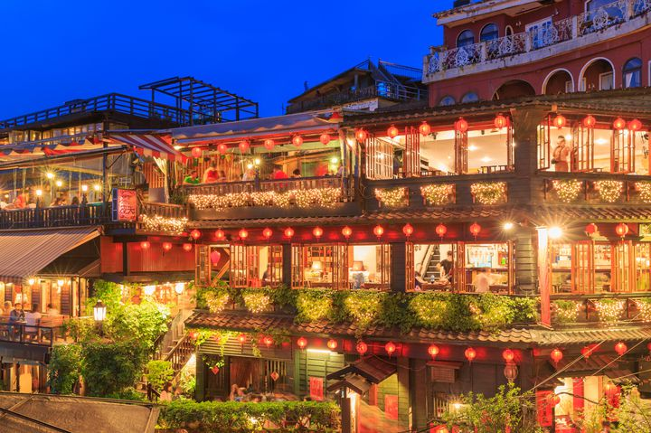
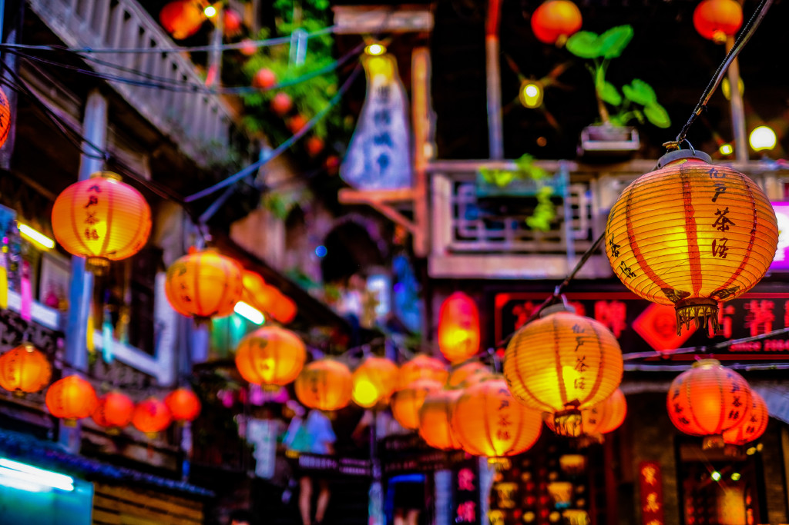

Jiufen(Taiwan)
 Jiufen, Taiwan, is a small mountain town that has gained international fame for its connection to the beloved Japanese animated film, Spirited Away. The film's fictional setting of the magical bathhouse is said to have been inspired by the town's historic teahouses and winding alleyways. Visitors to Jiufen can explore the town's narrow alleys lined with traditional red lanterns and visit A-Mei Teahouse, which served as the inspiration for Spirited Away's bathhouse. The town has embraced its connection to the film and has even hosted Spirited Away-themed events and sold merchandise. Jiufen is also known for its rich history, beautiful temples, and stunning natural scenery, making it a unique destination that blends history, culture, and fantasy.